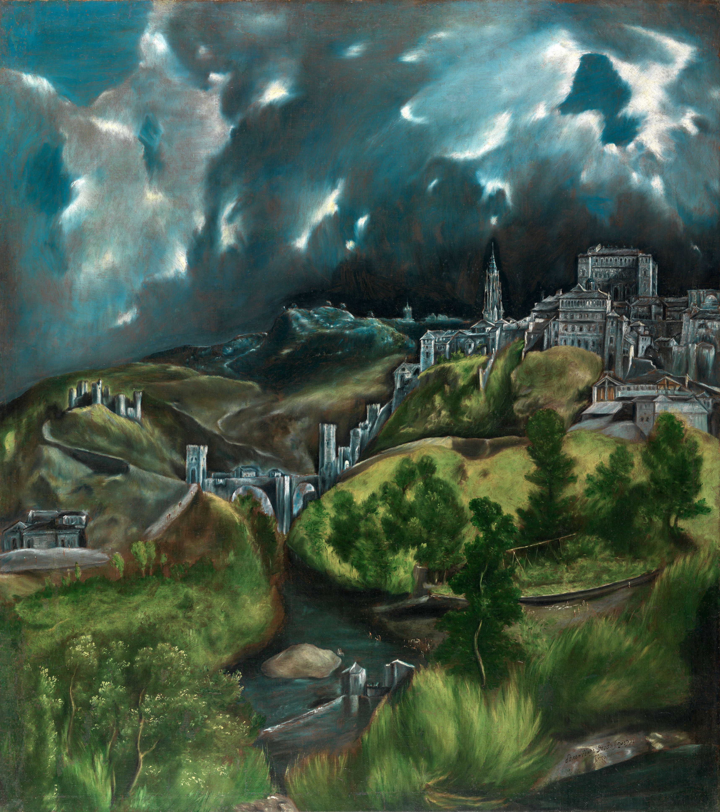

Home
Home Science
Science Music
Music Visual Art
Visual Art Poetry
Poetry Wisdom
Wisdom Blog
Blog Musings
MusingsNilotpal Sanyal
nilotpal(dot)sanyal(at)gmail(dot)com
Phone: (+91) 6290549681
I have multifarious interests. Feel free to explore some of them in this webpage. If you feel like connecting, send an email.
If you are looking for my professional website, go here.
Science
- A self-prepared Quantum Theory timeline- Feynmann Lectures on Physics
Ponderable quotes from great scientists
...rational is not always the spirit in science.."A new scientific truth does not triumph by convincing its opponents and making them see the light, but rather because its opponents eventually die and a new generation grows up that is familiar with it ... An important scientific innovation rarely makes its way by gradually winning over and converting its opponents: it rarely happens that Saul becomes Paul. What does happen is that its opponents gradually die out, and that the growing generation is familiarized with the ideas from the beginning: another instance of the fact that the future lies with the youth."
"We used to think that if we knew one, we knew two, because one and one are two. We are finding that we must learn a great deal more about 'and'."
"A mathematical theory is not to be considered complete until you have made it so clear that you can explain it to the first man whom you meet on the street."
"The supreme function of reason is to show man that some things are beyond reason."
"No, no, you are not thinking, you are just being logical."
"I speak from my present level of ignorance. The more you know, the more ignorant you become, because ignorance grows exponentially - the more answers you get, the more new questions arise."
"It seems plain and self-evident, yet it needs to be said: the isolated knowledge obtained by a group of specialists in a narrow field has in itself no value whatsoever, but only in its synthesis with all the rest of knowledge and only inasmuch as it really contributes in this synthesis toward answering the demand, "Who are we?""
"If our small minds, for some convenience, divide this glass of wine, this universe, into parts — physics, biology, geology, astronomy, psychology, and so on — remember that nature does not know it!"
"It is India that gave us the ingenious method of expressing all numbers by means of ten symbols, each symbol receiving a value of position as well as an absolute value; a profound and important idea which appears so simple to us now that we ignore its true merit. But its very simplicity and the great ease which it has lent to computations put our arithmetic in the first rank of useful inventions; and we shall appreciate the grandeur of the achievement the more when we remember that it escaped the genius of Archimedes and Apollonius, two of the greatest men produced by antiquity."
"All of science is nothing more than the refinement of everyday thinking."
Music
- An introduction to the Thaat system of the North Indian Classical music- A comprehensive list of ragas of the North Indian Classical music
"Music is perpetual, and only hearing is intermittent."
"The music is not in the notes, but in the silence between."
"After silence, that which comes nearest to expressing the inexpressible is music."
"If I were not a physicist, I would probably be a musician. I often think in music. I live my daydreams in music. I see my life in terms of music."
References:
♩ The Writings of Henry David Thoreau: Journal. 1856-1857. Ed. Bradford Torrey. Reprint of the Houghton Mifflin Co. 1906 ed. Vol. 9. 14 vols. New York, NY: AMS Press, 1982, 244-5)
♫ Viereck interview (1929), see the original and a transcription.
Visual Art
"Art is never finished, only abandoned."
"Art enables us to find ourselves and lose ourselves at the same time."
"Art is either plagiarism or revolution."
"Have no fear of perfection - you'll never reach it."
"Let's go and get drunk on light again -- it has the power to console."
A few from my favorite artistic creations..
Untitled
(Bird and tree)
by Jagadish Swaminathan, Oil on canvas
'Starry Night'
by Vincent Van Gogh, 1988, Oil on canvas
'Adolescence' by Salvador Dali, 1941, gouache, pen, brush and India ink and pencil on magazine cover
'Water-Lilies'
by Claude Monet, 1916-1919, Oil on canvas

'Christina's World'
by Andrew Wyeth, 1948, Tempera on panel

'Cafe Terrace at Night'
by Vincent Van Gogh, 1988, Oil on canvas
'Salisbury Cathedral from the Bishop's Grounds' by John Constable, 1823, Oil on canvas

'View of Toledo' by El Greco, 1596-1600, Oil on canvas
'I and The Village' by Marc Chagall, 1911, Oil on canvas

'The West Wind' by Tom Thompson, 1917, Oil on canvas
'Paris Street, Rainy Day' by Gustave Caillebotte, 1877, Oil on canvas
'Pietà'
by Michelangelo, 1499, Marble

'Taj Mahal', 1631-1653, Marble
'Belur Math, India'
'Ajanta Caves, India'
...More will be added when have time...
Poetry
I love to read and write poetries, especially of philosophical nature, sometimes using allegories from nature and its wonders and motivations gleaned therefrom.Bartleby.com and Poetseers.org are my favorite websites for poetries.
Some favorite verses are
- Ode: Intimations of Immortality from Recollections of Early Childhood - William Wordsworth
- O Solitude! if I must with thee dwell - John Keats
- Eternity - William Blake - William Blake
- Kali The Mother - Swami Vivekananda
- The Song of The Sannyasin - Swami Vivekananda
- Sakhar Proti (in Bengali) - Swami Vivekananda
- Nachuk Tahate Shyama (in Bengali) - Swami Vivekananda
- Extracts from Childe Harold's Pilgrimage: Ocean - Lord Byron
- To One Who Has Been Long in City Pent - John Keats
- She Walks in Beauty - Lord Byron
- Invictus - William Ernest Henley
- The Road Not Taken - Robert Frost
- I Wandered Lonely As a Cloud - William Wordsworth
- All the world's a stage, As You Like It, Act II, Scene VII - William Shakespeare
- Acquainted with the Night - Robert Frost
- Ode to the West Wind - Percy Bysshe Shelley
- By the Shore - Edward Carpenter
- From The Solitary Reaper - William Wordsworth
- A Dream Within a Dream - Edgar Allan Poe
Few own works follow. Feel free to share but with proper credits.


From the Bottomless to Limitlessness
Link to online publication
Wisdom
"True philosophers are always occupied in the practice of dying."
"My religion is not deceiving myself."
"Truth is not what you want it to be; it is what it is and you must bend to its power or live a lie."
"It is not length of life, but depth of life."
"Watch your thoughts; they become words. Watch your words; they become actions. Watch your actions; they become habit. Watch your habits; they become character. Watch your character; it becomes your destiny."
Blog
Musings
This page contains various fruits from reflections that you are free to find interesting, revealing, or boring. Most of these are pitched at very general philosophical level of things.
|
December 10, 2018 |
|
April 4, 2019 |
|
April 8, 2019 |
|
April 14, 2019 |
|
April 19, 2019 |
|
May 30, 2019 |
|
September 28, 2019 |
|
October 7, 2019 |
|
October 10, 2019 |
|
October 31, 2019 |
|
December 4, 2019 |
|
December 9, 2019 |
|
February 13, 2020 |
|
March 18, 2020 |
|
April 3, 2020 |
|
April 3, 2020 |
|
April 13, 2020 |
|
July 14, 2020 |
|
August 7, 2020 |
|
September 5, 2020 |
|
September 18, 2020 |
|
January 23, 2021 |
|
February 21, 2021 |
|
July 3, 2021 |
|
July 25, 2021 |
|
August 26, 2021 |
|
November 28, 2021 |
|
February 21, 2022 |
|
March 2, 2022 |
|
March 23, 2022 |
|
March 29, 2022 |
|
September 24, 2022 |
|
September 26, 2022 |
|
April 22, 2011 |
|
February 29, 2012 |
|
April 25, 2013 |
|
May 19, 2013 |
|
July 8, 2013 |
|
July 22, 2013 |
|
July 23, 2013 |
|
August 25, 2013 |
|
November 18, 2013 |
|
December 10, 2013 |
|
December 12, 2013 |
|
December 15, 2013 |
|
January 7, 2014 |
|
January 30, 2014 |
|
February 24, 2014 |
|
March 7, 2014 |
|
June 8, 2014 |
|
August 21, 2014 |
|
May 24, 2015 |
|
September 15, 2015 |
|
October 20, 2016 |
|
November 1, 2016 |
|
November 20, 2016 |
|
February 4, 2017 |
|
February 28, 2017 |
|
September 15, 2017 |
|
March 16, 2018 |
|
April 2, 2018 |
|
April 7, 2018 |
|
July 2, 2018 |
|
September 5, 2018 |
|
September 9, 2018 |
|
October 27, 2018 |